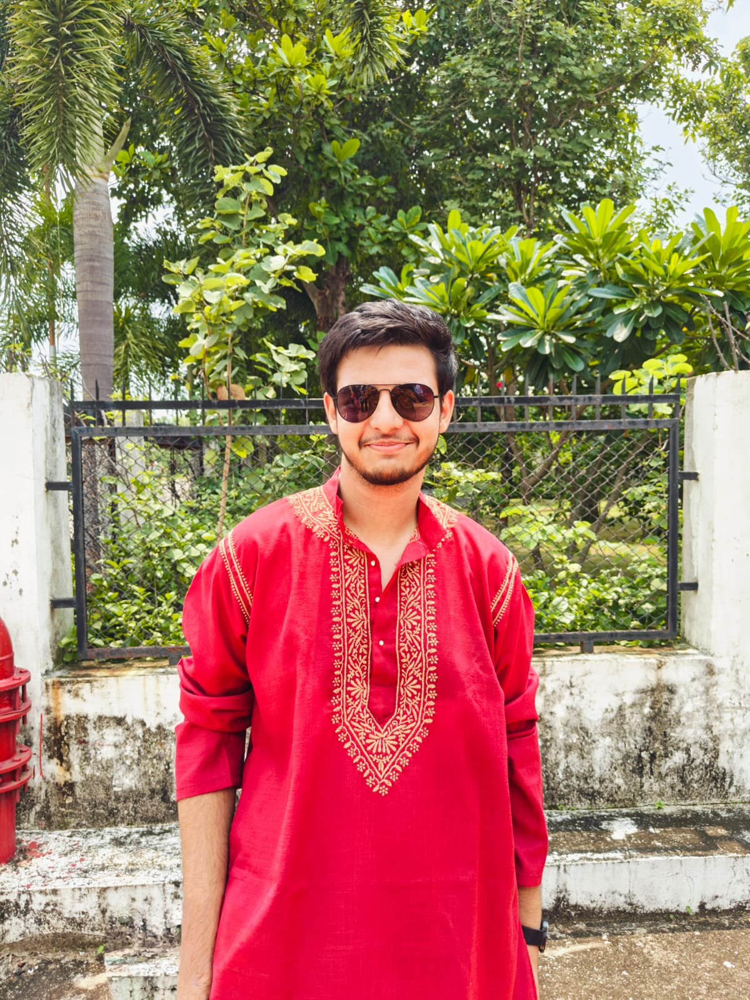

ABOUT OUR TEAM
Akshat is a key member of the VoteWise team, specializing in frontend development and system security. With a strong foundation in web technologies and a keen eye for detail, Akshat ensures that the platform operates efficiently while safeguarding sensitive voter data. His expertise in developing secure and scalable systems plays a critical role in creating a seamless user experience. Akshat is passionate about using technology to enhance civic participation and believes in building trustworthy systems that empower users to engage in democratic processes securely and confidently.
Vinamra is a talented front-end developer on the VoteWise team, focused on creating a smooth and intuitive user experience. With a strong background in HTML, CSS, JavaScript, Vinamra brings the platform's interface to life with clean, responsive designs. His attention to detail ensures that users, regardless of their technical background, can easily navigate the voting process. Vinamra is passionate about designing user-centric solutions that are both visually appealing and highly functional, making Vote Wise accessible to a wide range of audiences.
Vaibhav is an accomplished backend developer on the VoteWise team, specializing in building secure and scalable server-side solutions. With extensive experience in technologies such as Django & python, Vaibhav is responsible for designing and maintaining the core functionality of the platform. His expertise in API development and data management ensures that voter information is handled securely and efficiently. Vaibhav is passionate about leveraging technology to create reliable systems that uphold the integrity of the voting process, allowing users to cast their votes with confidence and trust in the platform's security.
Adarsh is a creative and detail-oriented front-end developer on the VoteWise team, dedicated to delivering a visually engaging and user-friendly interface. With expertise in modern front-end technologies like HTML, CSS, JavaScript, Adarsh focuses on designing responsive layouts that adapt seamlessly to different devices. Adarsh is passionate about crafting interfaces that are not only aesthetically pleasing but also functional and accessible, making online voting more inclusive and efficient.
Chaturya is an innovative front-end developer on the VoteWise team, focused on creating an engaging and intuitive user experience. With expertise in HTML, CSS, JavaScript, Chaturya excels in crafting responsive and visually appealing interfaces that enhance user interaction.Chaturya is dedicated to implementing best practices in web development and continuously seeks to improve the platform's usability, making online voting a seamless experience for all participants.